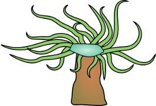

At MIT my conspicuousness should not surprise you
For tech, engineering, math, and I make up an alliance
I have a method to help you think matters through
What am I?
Diminutive though we tend to be, we are first in a parent's sight
Or change the context and on stage we sing
Of how certain people are not alright
What are we?
From birth, a great mantle I assumed
Through emerald seas I deftly slid
Leaving behind great onyx plumes
What am I?
I speak no words, though I have both mouth and tongue
Yet in many lands you can hear me knell
And many tunes I have sweetly sung
What am I?
In childhood, our prospect can lead to a scene
Taken badly we give you lumbago, perhaps
We can be forestalled if you imbibe caffeine
What are we?
I can be Gothic if you give me a face
Have I mentioned I fear to be cast off for Swype?
Moveable me is stored in a case
What am I?
We aren't so different, hairy me and hairless you
Yet you say you're better - despite our same shape -
Because you make oblation to gods and fancy tools use
What am I?
Fabric full of holes, not through tailor's oversight
But through glorious design. A touch may hem or neckline grace
Or pair me with a regent and find a flower white
What am I?
With sleep, I gather at your eyes
Though humble now, I come from boulders grand
And from me, with water, a castle can rise
What am I?
As a youngster you do me as a prelim
Steps in shallows make you less afraid
Of the coming day you learn to swim
What am I?